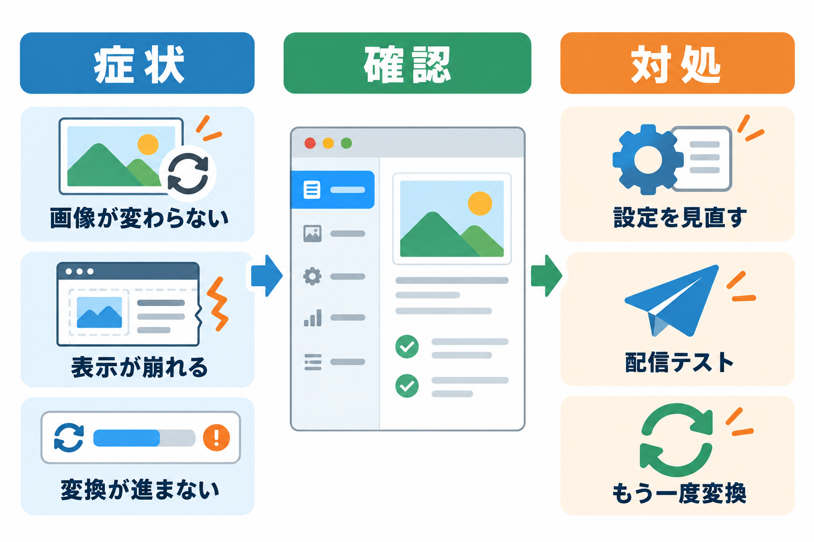

トラブルシューティング
よくある問題とその解決方法をまとめています。

よくある問題と解決策
画像が WebP・AVIF に切り替わらない
原因: 表示の設定がオフ、配信テストで止まっている、変換ファイルがまだ無い、切り替える範囲の外、ページキャッシュが古い、のどれかが考えられます。
「設定」タブの「変換した画像を表示する」がオンか確かめます。
「診断」タブの配信テストが「問題あり」になっていないか確かめます（診断タブ）。
メディアライブラリの一覧で、その画像に AVIF・WEBP のバッジがあるか確かめます（メディアライブラリ）。無ければ「今すぐ変換」を押します。
ヘッダーのロゴなど、テーマが直接出す画像なら、「切り替える範囲」を「ページ全体」にします（サイトでの表示のしくみ）。
ページキャッシュを使っている場合は、キャッシュを消してから見直します。
表示が崩れる・画像の並びが変わった
原因: テーマやスライダーなどの機能が、画像のまわりの要素を前提に動いていることがあります。
「表示崩れ防止の CSS を出力」がオンか確かめます。
崩れる画像に CSS クラスがあれば、詳細設定の「除外する CSS クラス」に書きます。URL で指定するなら「除外する画像 URL」を使います。
原因を切り分けるときは、「変換した画像を表示する」をいったんオフにします（元の画像の表示に戻ります）。
新しい画像が変換されない
原因: 自動変換がオフ、または「あとで自動」を選んでいて WordPress の予約処理（WP-Cron）が動いていない可能性があります。
「アップロード時に自動で変換」がオンか確かめます。
「診断」タブの「WP-Cron」が「無効」なら、「変換のタイミング」を「アップロード時（おすすめ）」にします。
変換されなかった画像は、「一括変換」タブでまとめて変換できます。
一括変換が途中で止まった・進まない
原因: サーバーの時間制限・メモリ不足、または管理画面を閉じていて予約処理が動いていない可能性があります。
「一括変換」タブを開くと、止まったところから進みます。止まっているときは「続きから再開」を押します。
「サーバーの応答が不正です」と出る場合は、大きな画像でメモリが足りないことがあります。詳細設定の「変換する画像の最大サイズ」を小さくするか、サーバーのメモリの上限をサーバー会社に相談してください。
失敗した画像は、あとで「以前に失敗した画像も試す」をオンにして一括変換すると、もう一度試せます。
「変換なし（軽くならないため）」が多い
原因: すでに十分に圧縮された画像や、写真の PNG などは、変換しても軽くならないことがあります。軽くならない画像は元の画像のまま表示するのが正しい動きです。
「軽くならなければ保存しない」をオフにすると保存しますが、ページは重くなります。おすすめしません。
AVIF が作られない
原因: サーバーが AVIF に対応していないか、「PNG・GIF は劣化なしで変換」がオンで、その画像が PNG・GIF です。
「診断」タブで AVIF が「○ 利用可」か確かめます。「× 利用不可」なら WebP だけで動きます。
PNG・GIF の AVIF を作りたい場合は、「PNG・GIF は劣化なしで変換」をオフにします（PNG・GIF の文字や線が少しにじむことがあります）。
画面に「確認用の鍵が切れた」ような英語の短いエラーが出る
原因: 画面を開いてから時間が経ち、操作の確認に使う情報の期限が切れました。または権限がありません。
画面を読み込み直してから、もう一度操作します。
削除したあと、画像が表示されない
原因: ページキャッシュに、削除前のページが残っています。
ページキャッシュ系のプラグインやサーバーのキャッシュを消します。
動作要件と制限
| 項目 | 内容 |
|---|---|
| WordPress | 5.9 以上 |
| PHP | 7.4 以上。GD または Imagick が必要 |
| AVIF | PHP 8.1 以上で AVIF に対応した GD、または AVIF に対応した Imagick |
| 対応する画像 | JPEG・PNG・GIF・WebP（アニメーション画像は変換しません） |
| 時間のかかる処理 | 一括変換は画像の数に応じて時間がかかります。1 回の処理はサーバーの時間制限の半分（5〜20 秒）で区切って進めます |
| 表示が切り替わる範囲 | このサイトのメディアライブラリの画像だけ。CSS の背景画像は対象外 |
| ブラウザ | すべてのブラウザで表示できます（WebP・AVIF に対応していないブラウザには元の画像） |